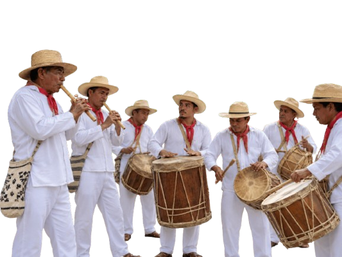
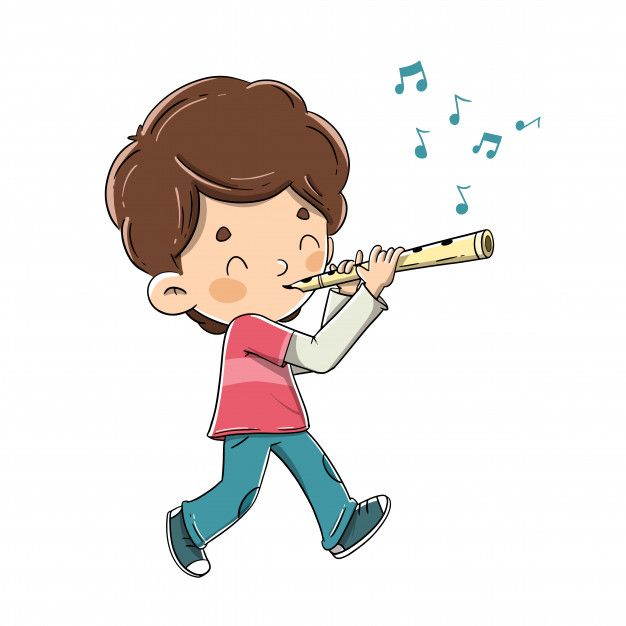

¿Quiénes son?
Los tamborileros son músicos tradicionales de Tabasco que interpretan melodías y ritmos utilizando la flauta de carrizo y los tambores. Su música acompaña danzas, fiestas patronales y celebraciones populares.
Detrás de cada sonido hay personas, encuentros y saberes. Acércate al mundo de los tamborileros.
 Nuestra gente
Nuestra genteLos tamborileros son músicos tradicionales de Tabasco que interpretan melodías y ritmos utilizando la flauta de carrizo y los tambores. Su música acompaña danzas, fiestas patronales y celebraciones populares.

Su tradición musical tiene antecedentes prehispánicos vinculados con la cultura maya yokot’an (chontal de Tabasco). Durante la época colonial incorporó elementos musicales europeos.

Una agrupación tradicional de tamborileros se conforma principalmente por tres músicos:
Pitero o flautista: interpreta la melodía con la flauta de carrizo.
Tamborilero del tambor macho: ejecuta los sonidos graves.
Tamborilero del tambor hembra: ejecuta los sonidos agudos.

Interpretan principalmente zapateados tabasqueños, sones, valseados y melodías que acompañan las danzas tradicionales de Tabasco.
Su vestimenta tradicional se caracteriza por la camisa y el pantalón de manta blanca, el paliacate rojo, el sombrero chontal y los huaraches.
Los puntos destacados corresponden a municipios vinculados históricamente con la cultura
Mapa municipal: amCharts, CC BY 4.0.
Esta es una de las muchas participaciones de los tamborileros en eventos culturales, donde comparten su música y mantienen viva la tradición tabasqueña.
Grupo de Tamborileros de Tabasco. (s. f.). El tigre «El rey de los zapateados tabasqueños» - Grupo de Tamborileros de Tabasco [Video]. YouTube. https://www.youtube.com/watch?v=NACyIGkJ2ME
Experiencia de reforzamiento
Pon a prueba tus conocimientos y completa las siguientes actividades.